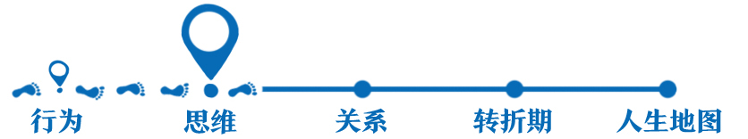

11丨僵固型思维：为什么你会活在别人的评判中？

欢迎来到《自我发展心理学》。
你好，我是陈海贤。
上一讲，我们说到防御型思维有三大天王，今天我们来讲第一天王——僵固型思维。
如果我问你，什么是预测一个人能否成功最重要的因素？也许你会觉得是能力。其实不仅是你，很多人都这么想。
人们设计了很多测验，来了解一个人的能力。你入学会有入学考试，你找工作，也会有各种职业能力测试。
这些能力测试背后都有一个假设：人的能力是相对固定的，所以能够根据能力把人分成三六九等。
可是，在现实生活中，你会遇到一些人，起步的时候能力平平，却凭着自己的努力，不断进步，最终获得了很大的成就。
你也会遇到另一些人，看起来很聪明，却因为某个挫折一蹶不振，逐渐泯于众人了。
今天我们所讲的僵固型思维，就是要告诉你，能力并不能预测一切，有时候怎么看待能力，要比能力本身更重要。
僵固型思维导致“脆弱的高自尊”
在讲僵固型思维前，我先讲个故事。
我以前遇到过一个学生，人很聪明，学习也很好，高考考上了一所名牌大学。
他来自一个县城中学，考上名牌大学的人并不多，校长觉得他脸上有光，就把他的照片放到了学校的荣誉墙上，还跟他说，“你很聪明，到了大学一定能为母校争光。”
他当时心里就咯噔一下，觉得自己被架到了一个很高的位置，上去了，下不来。
上了大学以后，他发现自己根本不算聪明。学校里到处都是牛人，这让他觉得自己特别普通。
大一学期末，他挂科了，是微积分。其实在大学里，这门课挂科的人很多，只要补考就好了。
可是他学了一段以后，觉得自己学不会，怎么也不肯学了，甚至连尝试也不愿意尝试。两次补考的机会，他都弃考了。
他不愿向老师同学求助，不愿让任何人知道他有课程不及格，每天躲在宿舍不想见人。偶尔有以前高中的学弟学妹加他微信，想问他大学的情况，他都一概拉黑了。
有一次我就问他：“为什么这次考试对你的影响会那么大？不就是一次考试吗？也有很多人没过啊。”
他说：“老师你不知道，我能考上这个大学完全是因为运气。现在这门课把我打回了原形。我其实就是很水的。”
在大学工作时，我经常遇到很多这样的学生。他们很聪明，可是也很容易因为一点点挫折而变得一蹶不振。
我发现这些人有一个共同的特点：他们的“自我”是很重的。
一帆风顺的时候，这些人会觉得自己很厉害，遇到挫折的时候，他们又觉得自己一无是处。但无论他们怎么评价自己，好像都特别关注自己的表现，特别关注别人会怎么看他们。
他们都有很重的证明自己的包袱。我把这种心理状态叫做“脆弱的高自尊”。
是什么原因造成了这种脆弱的高自尊呢？有一种解释是说，这些人肯定是在成长过程中受到了太多的批评和指责，所以变得不自信了。
毕竟我们都听过这样的说法，说表扬和赞美能培养一个人的自信心。可是仔细想想，好像也不是，他们的成长经历里，并不缺少肯定和表扬。相反，他们中的很多人，就是在表扬和肯定里长大的。
那又是什么让他们在挫折面前变得这么脆弱呢？这就是我们今天要讲的僵固型思维。
顺便说一下，去年腾讯的创始人之一陈一丹先生创设了一个“一丹奖”，这是全球最大的教育单项奖，奖金高达3000万港币，是诺贝尔奖奖金的3倍。
这一届的“一丹奖”，就颁给了成长型思维和僵固型思维的提出者——斯坦福大学的德韦克（Carol Dweck）教授。
僵固型思维到底在讲什么，能够让德韦克教授获此殊荣呢？让我们先从她的一个著名实验说起。
夸孩子“努力”比“聪明”更重要
为了考察表扬对孩子的影响，德韦克教授找了几百个小学初中的孩子，先给他们做10道容易的智力测验题。
当这些学生完成后，一部分学生被夸奖“聪明”：“哇，你做对了8道题！你太聪明了！”于是这些学生就被放到了非常有才的位置。而另一部分学生被夸奖“努力”:“哇，你做对了8道题，你一定很努力！”
结果出人意料。那些被夸聪明的孩子，在接下来的测验里，很多都不愿意再选择更难的题目，哪怕这些题目能够让他们学到新知识。
当研究者安排了一些很难的题目，所有的孩子表现都不好的时候，那些被夸聪明的孩子，对解难题再也没兴趣了，他们的表现也直线下降。即使重新做一些容易的题目，也很难让他们再有信心了。
甚至最后，当研究人员让他们在试卷上写下他们做这些题目的分数和感受的时候，那些被夸奖聪明的学生，有40%左右的学生都撒了谎：他们虚报了自己的成绩，而且都报高了。
相反，那些被夸奖很努力的人，却越挫越勇，他们保留着对解难题的兴趣，表现也越来越好。
这个研究是颠覆性的。它证明了：跟我们所想的不同，夸孩子聪明不仅不会增加孩子的自信，还会削弱了孩子的抗挫折能力。
为什么表扬孩子“聪明”和表扬“努力”会产生这么大的区别？德韦克教授解释说，表扬聪明和表扬努力激发了他们不同的心智模型。
表扬“聪明”实际上暗示了这样的观点：人的能力是相对固定的，解难题只是证明你聪明不聪明的方式。
一旦孩子接受了“人的能力是相对固定的”这样的观点，而他们又被夸聪明，那他们自然就会努力维护聪明的形象。他们会把注意力从挑战任务本身，转移到对自我的关注上来。这就是僵固型思维的特点。
相反，表扬“努力”却暗示着：人的能力并不是固定的，我们可以通过努力来发展自己的能力。
既然人的能力并不固定，他们不需要有证明自己的包袱，自然就能把目光专注到努力本身。
关注自我证明，还是关注能力成长，是成长型思维和僵固型思维的重要区别。
一个有僵固型思维的人，在面对挑战时，很容易放弃，因为他会担心困难的任务会证明他不行；而一个有成长型思维的人，却欢迎挑战，因为他会把挑战看作能力成长的机会。
僵固型思维的人，觉得努力是一件可耻的事，如果你需要努力才能做成一件事，说明你能力不够，所以就算努力，他们也会偷偷努力；而成长型思维的人，以努力为荣，因为他们觉得努力就是激发能力的手段。
他们对批评的看法也不一样。僵固型思维的人更容易把批评当做对他本人的负面评价；而成长型思维的人更容易把批评当做是一种帮助人们改进的反馈。
看到别人成功时，僵固型思维的人会把它看作是自己的失败，因为别人做到了而自己没做到，那就是证明自己不行；而成长型思维的人却会从别人的成功中学习，去吸取别人的经验，把它们变成自己经验的一部分。
与真实世界的互动促进自我发展
说到这里，也许你已经明白了，僵固型思维的本质，是一种防御的心态。有僵固型思维的人，会把注意力从关注怎么做事转移到关注怎么维护“我很强”的自我形象上去。
这背后也有人际关系上的不安全感。正如我们在第一节课讲两种心智模式的时候提到，探索世界和能力发展常常需要一种安全感作为基础。
僵固型思维的背后其实隐藏着这样的人生假设：我自己的价值是由别人来评价的。我只有表现得好，别人才会觉得我有价值。这种焦虑自然就会把我们的目光放到自我证明上。
我一直觉得：
世界向我们提出问题，我们努力解答问题。这时候，我们的能力在我们与世界的互动中逐渐成长起来，我们的自我也在这种与世界的互动中逐渐变得丰富起来。
但是当我们感到不安时，我们就会把注意力投射到自我身上，我们会问：我是什么样的人？别人会怎么看我？我这么做是对是错的？
我们想通过解答这些问题来发展自我，而实际上呢，因为没有和世界的真实的互动，自我的发展反而停滞了。
所以，我们都应该在与世界的真实互动中发展自我，而不是死守着一个僵化的自我概念。
无论这个自我概念是聪明、能干、懂事还是其他，也无论这个自我概念的评价来自父母、师长、领导还是心爱的人。
请记住，如果你相信变化，那么你是一个什么样的人根本不重要，你会怎么发展才重要。
下节课，我们会继续讲讲怎么克服僵固型思维。
我们下节课见。